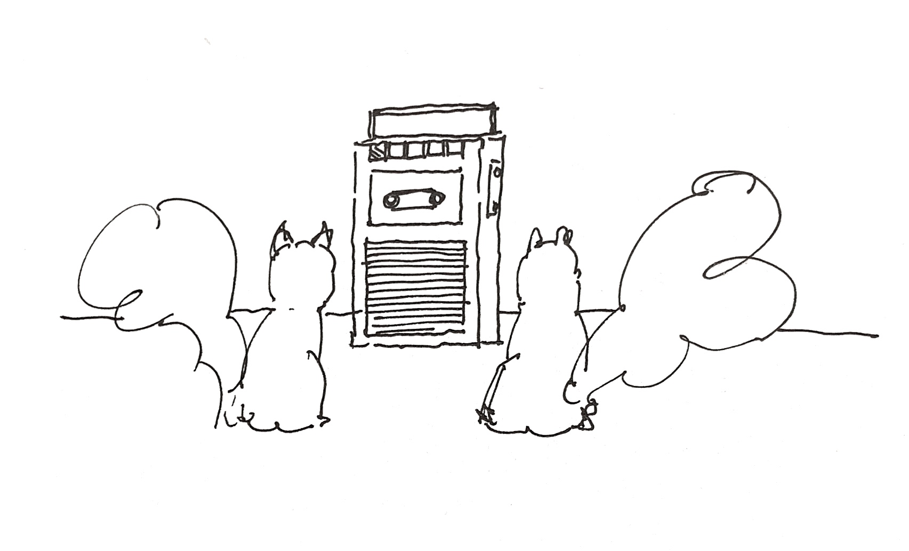
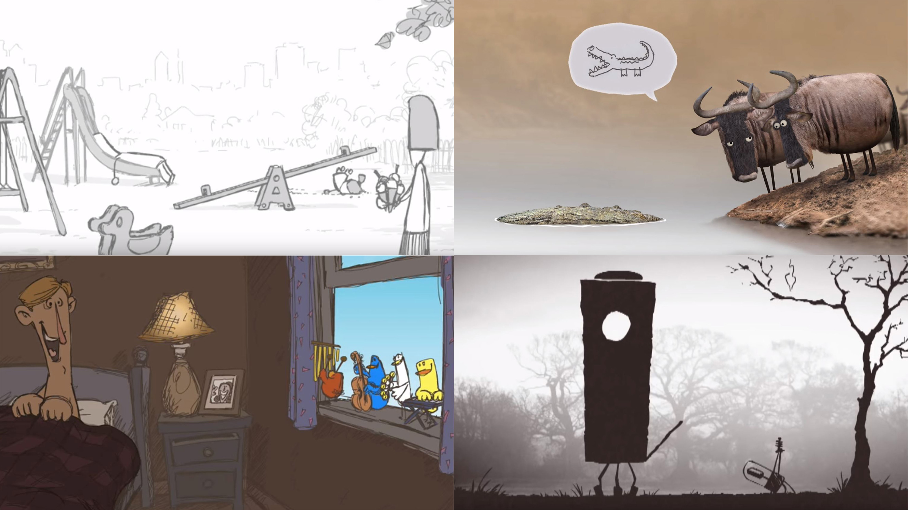
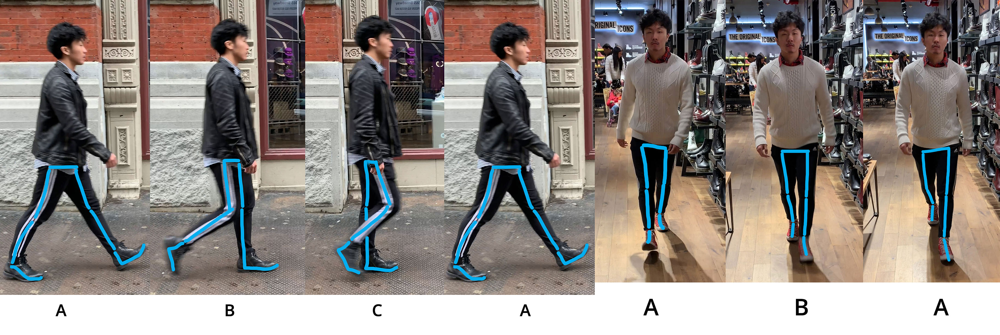

Although in my reference video the bottom half of my body doesn't move a lot, animating it is still necessary. For example, the weight shift from one leg to the other can add a lot of dynamics to the character.
Based on my finding, a good animation need to have both subtle parts (the facial expression, timing and spacing, etc.) and obvious parts (movement of hand, leg, head, etc. )
Homework 7 - Create Gesture with Sound
It is diffiult to animate the character based on only the YouTube Clip, because close-up framing of Jennifer and the editing between Jennifer and the male character Vince make it hard for me to see the body movement of Jennifer clearly. Therefore, I roughly repeat the movement of Jennifer from four sides.
In the reference video, there is no much movement on my leg which doesn't seem weird in live action. However, in the animation it does look weird. I don't know how to solve the problem
Squirrels & Tape Player

Once upon a time there were two squirrels Riley and Justin. They are best friends but they haven't realized that they have such a different taste in music because at that point they don't know what music is. Until one day they step upon an old-fashion Sony tape player. Riley steps onto the player and accidentally clicks the play button. The two of them are shocked by the playing Jazz music and run away. As they approach the tape player again, Riley starts to dance to the music because he realizes he loves Jazz music but Justin doesn't, so Justin takes a closer look at the row of buttons and clicks the next song button. It was a country music. Justin loves it and starts to dance to it. Riley becomes unhappy so he pushes Justin away and clicks the previous song button. Then they start to have a fight because each of them wants to listen to the song they like. The next and previous song buttons have been clicked multiple times. The tape player is broken and it starts to play a lot of random songs. The two of them are still fighting, until the tape player stops at an classic pop music. They both loves pop so they start to dance together.
Research:
I watched all 14 short animations made by Birdbox studio. Since all the animations are around 1 min long, everything (story, characters, framing, concept, etc.) has to be as simple as possible. The story always focuses on a specific event such as a UFO landing, a man going to bed, a dad taking kids to playground. From a cinematography standpoint, all the animations are also one long take which can help the audience better focus on the story.

Mid-term Reel
Homework 5 - Walking Cycle
A problem I discern on this walking rig is that the walking looks unstable and shaky. I lower the pelvis, but it doesn’t solve the problem at all. I am curious what is the problem is.
The rotation of the pelvis is an important detail that makes a big difference to the overall animation. Based on my research, the pelvis will not only move in the direction of the moving leg but also rotate toward (horizontal) and up (vertical) in the direction of the moving leg.

Homework 4 - Walking Cycle
The character’s walking style is not only influenced by its walking habit but also by the shoes it wears. When I made the two reference videos, my friend Daryl wore two different types of shoes: boots and converse all stars. He tended to use more of the back of his feet to land, when wearing boots.
As Daryl walked, his pelvis moved and slightly rotated the same direction as his moving-forward leg.
Homework 3 - Puppy Walking Cycle
Based on my reference video, I notice that the body doesn’t move (or really slightly) up or down.
After drawing the key poses, I realize that once the person starts to walk, the key poses will switch back and forth between keyframe 4 and 5, which I later learned are called “forward contact point”, “passing pose,” “back contact point.”